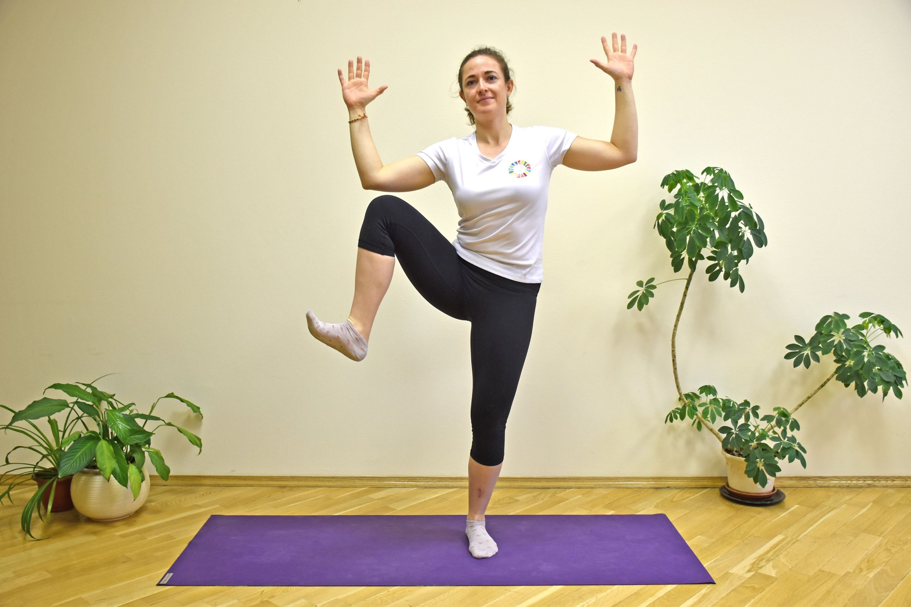

Touch your knee with your elbow, lifting the knee to the side, alternating sides. Find your own pace. Try to perform this for 1–2 minutes, rest for 30–60 seconds, and repeat up to 5 times. This exercise should increase your heart and breathing rates.
